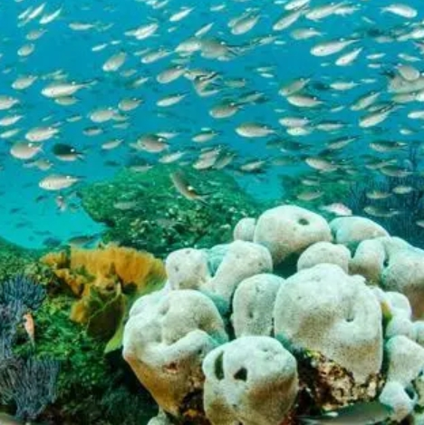

海の豊かさを守ろう
海の汚染の主な原因である陸上の人間の活動を改善し、海洋汚染を防ぎ、海の生態系に悪影響を与えないよう、健全で生産的で持続可能な海洋、および生態系の保護と回復を目指すための目標です。


“水生生態系の保護と回復、海洋資源の持続的利用の実現”
海洋の生物多様性の保全と持続可能な利用に関する施策を効果的に実施していくためには、海洋の生物多様性の現状を適切に評価し、将来生じることが予想される問題を把握することが重要である。また、このような評価を継続的に行うためには、その基礎としての海洋環境の変化を恒常的に観測し、生物多様性に関する科学的データを充実させていく必要がある。さらに観測によって得られたデータから、分類学や生態学の基礎的な研究が充実し、海洋の生態系に関する科学的知見が蓄積されることも重要である。
MORE +海の豊かさを守ろう
海の汚染の主な原因である陸上の人間の活動を改善し、海洋汚染を防ぎ、海の生態系に悪影響を与えないよう、健全で生産的で持続可能な海洋、および生態系の保護と回復を目指すための目標です。